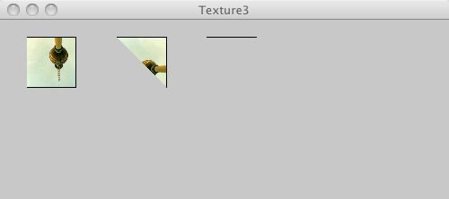

This page tests PJS textures

/* @pjs preload="berlin-1.jpg" */
import processing.opengl.*;
size(500, 200, P3D);
background(200);
PImage img = loadImage("berlin-1.jpg");
textureMode(NORMALIZED);
noFill();
beginShape();
texture(img);
vertex(30, 20, 0, 0, 1);
vertex(85, 20, 0, 1, 1);
vertex(85, 75, 0, 1, 0);
vertex(30, 75, 0, 0, 0);
endShape();
beginShape();
texture(img);
vertex(130, 20, 0, 0, 0);
vertex(185, 20, 0, 0, 1);
vertex(185, 75, 0, 1, 1);
endShape();
beginShape();
texture(img);
vertex(230, 20, 0, 0, 0);
vertex(285, 20, 0, 1, 1);
endShape();
beginShape();
texture(img);
vertex(330, 20, 0, 1, 1);
endShape();